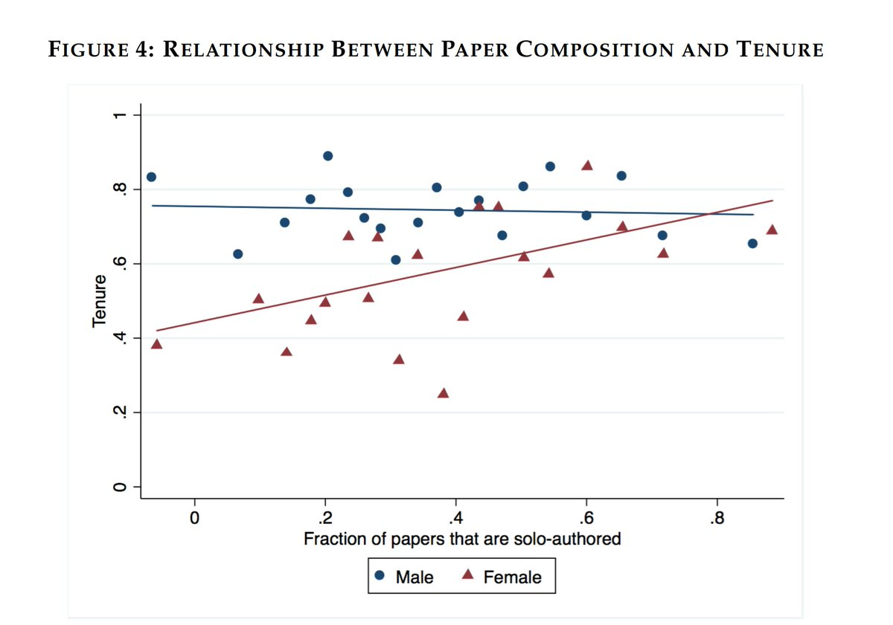

Paul Goldsmith-Pinkham
Research Economist

I am an assistant professor at the Yale School of Managment. If you need to reach me, please email me at paul.goldsmith-pinkham at yale dot edu.
Favorite Figures
Matt Notowidigdo prompted a great thread of peoples' suggestions of their favorite figures. I thought I would give a resting place for the nominees:
Jacobson, Lalonde, Sullivan (1993), nominated twice!
Sarsons (2017) 
Playfair (1821)
Krugman and Obstfeld Textbook

DC students who live in Ward 7 commute to middle schools all over the city. Read the full story (https://t.co/jGudS5dqFY) and 5-city empirical study (https://t.co/vDVdZXaYZQ). pic.twitter.com/TCYTaz7DiU
— Matt Chingos (@chingos) March 14, 2018